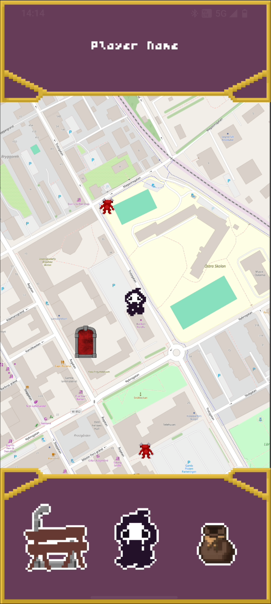
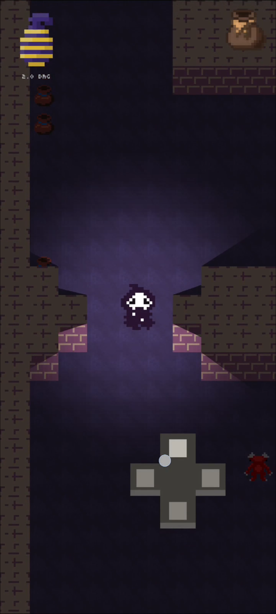
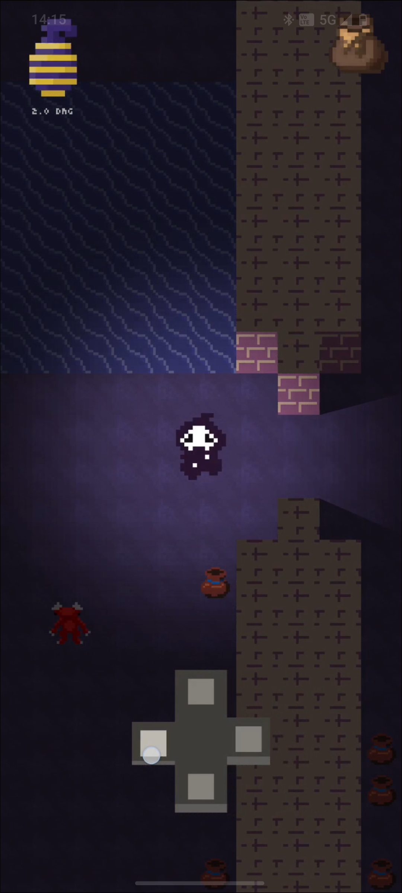
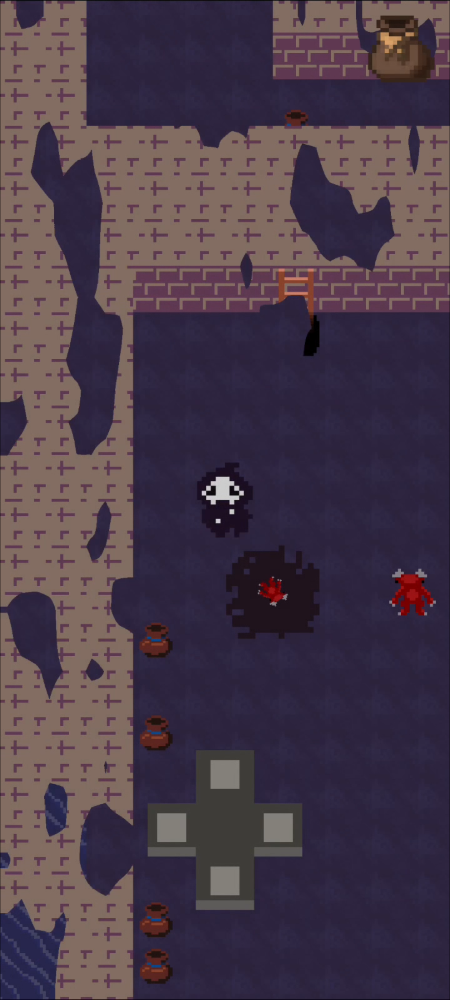
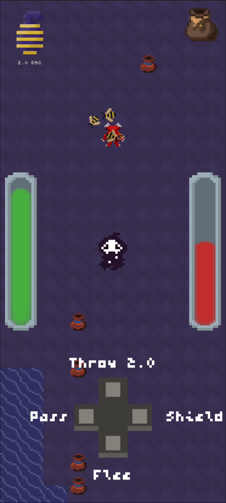

⢘⡆⠀⠀⠀⠀⠀⠀⠀⠀⠀⠀⠀⠀⠀⠀
⢈⠂⠀⠀⠀⠀⠀⠀⠀⠀⠀⠀⠀⠀⠀⠀
⢸⠀⠀⠀⣼⡀⠀⢀⠖⠉⠀⠉⠓⡄⠀⠀
⣸⠀⠀⠀⣿⡇⡰⠁⠀⠀⠀⠀⠀⢹⠀⠀
⣻⠈⠉⠉⡏⡏⠏⠁⠀⠀⠀⠀⠀⡋⠀⠀
⡇⠀⠀⠀⣿⠀⠀⠀⠀⠀⠀⠀⡼⠁⠀⠀
⡇⠀⠀⠀⠀⠀⠀⡀⠀⠀⠀⢰⡥⠋⢙⡆
⡇⢠⠉⠙⢢⠀⢀⡇⠀⠀⢠⡏⠀⠠⠎⠀
⡇⠘⠦⠠⠎⠀⠠⡇⠀⢠⡏⠀⠀⠀⠀⠀
⡇⠀⠀⠀⠀⠀⢸⣇⠀⠁⠀⠀⠀⠀⠀⠀
⡇⠀⠀⠀⠀⣠⠏⠈⣆⠀⠀⠀⠀⠀⠀⠀
⡇⠐⠒⠚⠯⡁⠀⠀⠀⣉⠽⠟⠒⠉⠁⠀
⡇⠀⠀⠀⠀⡈⣦⢠⠞⠁⠀⠀⠀⠀⠀⠀
⣷⠀⡀⠀⢠⡇⠸⡇⠀⠀⠀⠀⠀⠀⠀⠀
⡟⢸⠀⠀⣾⠃⢰⡇⠀⠀⠀⣀⠀⠀⠀⠀
⣿⠘⠤⢴⠃⠀⢸⠁⠀⠀⠸⣌⡿⠀⠀⠀
⡇⠀⠀⡜⠀⠀⠘⠀⠀⠀⡀⠀⠀⠀⠀⠀
⡧⠀⢠⠃⠀⠀⠀⠀⠀⠀⡇⠀⠀⠀⠀⠀
⣿⠀⢸⠀⠀⠀⠀⠈⠙⣆⣧⣀⠀⠀⠀⠀
⣯⠀⠈⢧⠀⠀⠐⠚⢛⠏⡏⠉⠉⠁⠀⠀
⣗⠀⠀⠀⠙⠲⠤⠔⠋⠰⡇⠀⠀⠀⠀⠀
⡇⠀⠀⠀⠀⠀⠀⠀⠀⠀⠁⠀⠀⠀⠀⠀
⠇⠀⠀⠀⠀⠀⠀⠀⠀⠀⠀⠀⠀⠀⠀⠀
⠀⠀⠀⠀⠀⠀⠀⠀⠀⠀⠀⠀⠀⠀⠀⠀⣴⣶⡀⠀⠀
⠀⠀⢠⣤⡀⠀⠀⠀⠀⠀⠀⠀⠀⣠⣤⣾⠏⠘⠿⣦⣤
⠀⠀⣾⠉⠻⢶⠶⠛⢻⡇⠀⠀⠀⠘⢻⡦⠀⠀⢰⡾⠃
⢀⣤⠿⠀⠀⠀⠀⢠⡟⠁⠀⠀⠀⠀⠸⠷⠿⠿⣾⣷⠀
⢿⣥⣀⠀⠀⠀⠀⠀⢻⡆⠀⠀⠀⠀⠀⠀⠀⠀⠀⠀⠀
⠀⠈⠉⣿⣀⣾⠟⠛⠋⠁⠀⠀⠀⠀⠀⠀⠀⠀⠀⠀⠀
⠀⠀⠀⠘⠛⠁⠀⠀⠀⠀⠀⢀⣾⢻⣆⡀⠀⠀⠀⠀⠀
⠀⠀⠀⠀⠀⠀⠀⠀⠀⢀⣤⣾⠃⠀⠙⠛⣿⠇⠀⠀⠀
⠀⠀⠀⠀⠀⠀⠀⠀⠀⠈⠻⣶⡄⠀⠀⢸⣏⠀⠀⠀⠀
⠀⠀⠀⠀⠀⠀⠀⠀⠀⠀⠀⢾⡷⠟⠛⠻⠿⠀⠀⠀⠀
⠀⠀⡄⠀⠀⠀⠀⠀⠀⠀⠀⠀⠀⢠⡄⠀⠀⠀⠀⠀⠀⠀⠀⠀⠀⠀⠀⠀⠀⠀⠀⠀⠀⠀⠀⠀⠀⠀⠀⠀⠀⠀⠀⠀
⠀⠤⢥⠤⠀⠀⠀⠀⠀⠀⠀⢀⣠⡞⠳⣄⠀⠀⠀⠀⠀⠀⢀⢤⠀⠀⠀⠀⠀⠀⠀⠀⠀⠀⠀⠀⠀⠀⠀⠀⠀⠀⠀⠀
⠀⠀⠘⠀⠀⠀⠀⠀⠀⠤⣶⣛⠉⠀⠀⢈⡳⠖⠀⠀⠀⠀⠘⠚⠀⠀⠀⠀⠀⠀⠀⠀⠀⠀⠀⠀⠀⠀⠀⠀⠀⠀⠀⠀
⠀⠀⠀⠀⠀⠀⠀⠀⠀⠀⠀⠈⢿⡀⣰⠋⠀⠀⠀⠀⠀⠀⠀⠀⠀⠀⠀⠀⠀⠀⠀⠀⠀⠀⠀⠀⠀⠀⠀⠀⠀⠀⠀⠀
⠀⠀⠀⠀⠀⠀⠀⠀⢀⣠⠤⠤⠀⣧⠇⠀⠐⠦⢤⣀⠀⠀⠀⠀⢀⣤⠖⠒⠛⠛⠓⠂⠀⠶⠀⠀⠀⠀⠀⠀⠀⠀⠀⠀
⠀⠀⠀⠀⠀⠀⢠⡶⠋⢀⡀⠀⠀⢻⠀⠀⠀⠤⡀⠈⠳⣄⣀⡴⠋⢀⠔⠈⠉⢉⣱⠀⢀⠤⡄⠈⠳⣤⠠⠤⠦⢤⡀⠀
⠀⠀⠀⠀⠀⣰⠋⢀⡔⠁⣸⠀⠀⠈⠀⠀⠀⠀⠘⢂⠀⠘⠋⠀⠐⠇⠰⠂⠉⠁⠀⠀⠈⠉⠀⠀⢠⠘⣧⠀⠀⠀⢻⡆
⠀⠀⠀⠀⠀⡟⠀⡼⠀⢠⠃⠀⠀⠀⠀⠀⠀⠀⠀⠈⠀⠀⠀⠀⠀⠀⠀⠀⠀⠀⠀⠀⠀⠀⠀⠀⢸⡆⢸⡄⠀⠀⣼⠇
⠀⠀⠀⠀⠸⡇⠀⠣⣀⠞⠀⠀⠀⠀⠀⠀⠀⠀⠀⠀⠀⠀⠀⠀⠀⠀⠀⠀⠀⠀⠀⠀⠀⠀⠀⠀⠠⠄⣸⠀⢀⣼⠋⠀
⠀⠀⠀⠀⠀⣷⠀⢀⡄⢢⠀⠀⠀⠀⠀⠀⠀⠀⠀⠀⠀⠀⠀⠀⠀⠀⠀⠀⠀⠀⠀⠀⠀⠀⠀⠀⣰⢀⣯⡾⠛⠀⠀⠀
⠀⠀⠀⠀⠀⠹⣷⠀⠑⠋⠀⠀⠀⠀⠀⠀⠀⠀⠀⠀⠀⠀⠀⠀⠀⠀⠀⠀⠀⠀⡀⠀⠀⠀⢀⣠⢷⡟⠁⠀⠀⠀⠀⠀
⠀⠀⠀⠀⡇⠀⠹⣇⠀⠀⠀⠀⠀⠀⠀⠀⠀⠀⠀⠀⠀⠀⠀⠀⠀⠀⠀⠀⠀⣰⢱⡀⠀⠀⠉⢰⡏⠀⠀⠀⠀⠀⠀⠀
⠀⠀⠉⠁⠆⠉⠀⢙⣷⣄⠰⡀⠀⠀⠀⠀⠀⠀⠀⠀⠀⠀⠀⠀⠀⠀⠠⠶⣚⠁⠀⢙⡶⢃⡴⠋⠀⢀⠀⠀⠀⠀⠀⠀
⠀⣠⠄⠀⠀⢀⣴⠋⠀⠙⢦⡙⢦⡀⠀⠀⠀⠀⠀⠀⠀⠀⢀⢀⠀⠀⠀⠀⠈⠳⡀⡜⡠⠊⠀⠀⣀⡘⣁⣀⠀⠀⠀⠀
⠀⠐⠁⠀⢀⡏⡏⠀⠀⠀⠀⠙⠶⣌⠓⠄⣀⠀⠀⠀⠀⡀⠼⣀⣀⠀⠀⠀⠀⠀⣷⠁⠀⠀⠀⠀⠀⠸⠇⠀⠀⠀⠀⠀
⠸⣁⡇⠀⠸⡇⠣⣀⠀⠀⠀⠀⠀⠈⠻⣦⣉⣄⡤⠔⠂⠀⠸⠀⠀⠀⠀⢀⡴⠒⠘⠀⠀⠀⠀⠀⠀⠀⠀⠀⠀⠀⠀⠀
⠀⠀⠀⠀⠀⠙⠶⢤⣭⣴⣦⣶⡾⠾⠟⠛⠙⢷⣄⡀⠀⠀⠀⠀⢀⡤⠞⠉⠀⠀⠀⢀⣠⣎⡁⢲⡄⠀⠀⠀⠀⠀⠀⠀
⠀⠀⠀⠀⠀⠀⠀⠀⠀⠀⠀⠀⠀⠀⠀⡒⡂⠀⠈⠛⠲⣄⡴⠞⠁⠀⠀⠀⠀⠀⠀⠨⡌⢪⡿⠚⠁⠀⠀⠀⠀⠀⠀⠀
⠀⠀⠀⠀⠀⠀⠀⠀⠀⠀⠀⠀⠀⠀⡀⠉⠀⠀⠁⠀⠀⠀⠀⠀⠀⠀⠀⠀⠀⠀⠀⠀⠉⠉⠀⠀⠀⠀⠀⠀⠀⠀⠀⠀
⠀⠀⠀⠀⠀⠀⠀⠀⠀⠀⠀⠀⠀⠀⠁⠰⣉⠇⠀⠀⠀⠀⠀⠀⠀⠀⠀⠀⠀⠀⠀⠀⠀⠀⠀⠀⠀⠀⠀⠀⠀⠀⠀⠀
I built a map viewer to stream and render map tiles from OpenStreetMap (OSM) inside
the game, driven by the GPS coordinates of the phone it runs on.
The system is dependent on PraxisMapperGPSPlugin, a plugin that allows for starting
the GPS service and getting updates to the _on_gps_update() function but not much
else.
The longitude and latitude of the player are passed to the GPS update function,
from which a new center is set, calculated using the Web Mercator projection.
The world is positioned around it accordingly- every tile that is rendered is offset
from the center.
The actual map tiles within a configurable X/Y range around the center tile are fetched
from OSM using their respective X and Y coordinates, as well as the zoom
level; a URL is constructed in the format
https://tile.openstreetmap.org/{z}/{x}/{y}.png and requested with an
HTTP request. The result is fetched asynchronously so I bind the
request_completed signal to a function that handles converting the fetched
image to an ImageTexture, which is stored in a dictionary keyed by its tile coordinates.
This is handy to be able to render it at the correct offset from the center_tile
in the _draw() function.
I made sure to only issue an HTTP request to OpenStreetMap if the tile doesn't exist
in a requested_tiles dictionary. I also make sure to only fetch tiles that haven't
been fetched and processed. This prevents duplicate network calls drastically.
Initially, I was setting the center position directly as the player would move but I
noticed that this caused the entire map to jump as a new position would be fetched. To
fix this, I store
lerp_start and target_center and increment a lerp alpha value each frame
in _process(). The center tile is interpolated smoothly over time, which makes
GPS updates feel stable and intentional rather than jittery. All rendering is
handled manually in _draw(), where each tile's screen position is calculated
relative to the current center tile and viewport size.

On top of the streamed map, I added a world object system that spawns interactable
objects directly onto tiles.
Objects spawn at random intervals and on random visible tiles. Each object is stored as
a dictionary containing its texture, a random local offset within the tile, and animation
state data such as curr_frame, array_index, and activation flags.
Instead of using Godot's built-in animation tools, I implemented a fully custom animation
pipeline. During draw time, I extract the texture's filename from its resource path using
a regular expression. That name determines which sprite array to sample from. Because
animation selection happens at render time, I can easily transition objects between
animation states by incrementing their array_index. I want to highlight that this
was a completely unnecessary way of going about this. Normally in Godot, a node with
animation capabilities would be used to skip all of the hassle of setting up such a system
but since this was the first time I used Godot, I wasn't aware of all the features within
the engine- which lead to me making some custom functionality for things that did not need
it.
A good example for my object/animation system is the portal object. It starts by sampling
frames from an activation array- containing frames of the portal opening up. Before this
is done, it cannot be interacted with. When the final frame is reached, I mark the object
as activated and increment the array index so that subsequent frames are pulled from a
looping portal_on sprite array. The animation logic and state transition is handled
entirely through data stored in the object dictionary.
Click handling is done manually using an AABB intersection test against each
object's calculated screen position. I added a configurable pixel buffer to expand
the AABB and make touch input more forgiving on mobile devices for smaller objects.
When an intersection is detected, I branch behavior based on the item clicked;
rocks are added to the player's inventory, while an activated portal triggers a scene
change to the dungeon.
The result is a system where real-world geography becomes the foundation for gameplay.
The map streams live data, objects spawn dynamically on top of it, and animation and
interaction are adequately controlled.
When clicking on a dungeon, I change the scene from the world-map to a scene in
which a dungeon is generated procedurally. I wanted to experiment with this as I was
simply having fun with Godot at this point in the project- therefore I mostly winged
the entire dungeon generation algorithm.
I did however not wing everything as I implemented a Binary Space Partioning
algorithm (BSP) to recursively subdivide the 2D space which made up the level. It splits
the level into two parts for each pass, alternating between splitting the rooms
horizontally and vertically. This creates a simple but quick and easy dungeon-like level.
I used TileSets to visualize the result from this algorithm and I implemented an
autotiler, which checks the neighboring cells to determine what kind of tile to
place at any given location. Generating pathways between rooms was quite simple as I
implemented a recursive function that would get a random start-point along the edge of
room a and traverse into room b, changing the values of the cells in the
TileSet.
For the dungeon generation, I also added simple water pools that would appear randomly
and with random sizes. Finally, I added a chance to spawn pots next to the walls that
breaks when the player walks on them! Enemies are also be spawned, but
completely randomly unlike the pots.


Because I wanted to create a small mini-rpg demo I needed items as well as enemies
and combat.
To be able to use and recieve items, an inventory was needed. This was made with simple
Godot UI and uses the ConfigFile class in Godot to store items in sections
named items, equipped and resources. Items and resources contains
things you've picked up while the equipped section is used to tell what weapons and
armour is currently used by the player. On ready, the _load_config() function
is called which loops through the sections saved in the file and calls functions on
them to populate item lists and set the equipped items in local variables. The reverse
is done for saving to the config, where local variables are be added to the file
and stored in a file on the device. Picking up items and eqipping them was as simple as
updating the items variable and calling the save_config() function.
With items implemented the next step was combat!
Most of the work went into making the visuals of the combat work as attacking and
blocking didn't take much time to implement at all. This is honestly quite poorly
implemented as I used lerps and timeouts for every single thing- something which I don't
feel is inherently wrong but using the AnimationPlayer would be significantly
easier and faster to use. During the project, I wasn't aware of how immensely useful a
tool like it could be and it wasn't until working on M0THER
that I learned that these things should take advantage of the AnimationPlayer.

